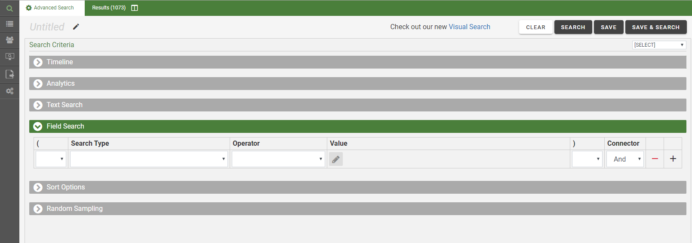

Define an Advanced Search
In , Advanced Search allows
you to easily construct complex search expressions or specialized searches
and display results in the Results
tab. Searches can also be saved for later use or for specific tasks. For
example, batches must be based on a saved search.
On the Advanced Search tab, under Search Criteria, areas
can be expanded as required to define the search and/or search options. These areas
are described in the following sections. The Advanced
Search tab with the Field Search area expanded and the other areas collapsed is shown as follows:

To go to the new Visual Search dashboard, click Check out our new Visual Search in the top right of the screen.
About Search Types and Search Options
Timeline Searches
The Timeline (also located on the Visual Search dashboard - see Define a Visual Search) allows you select date criteria for the search. This includes limiting search results to a specific date range, which displays on the Timeline. You can select Include Empty & Invalid Dates as well. For more information, see Define the Timeline.
Text Searches
Text searches are as the name implies – full text searches for words
or phrases in case database fields (and corresponding images, native files,
and so on.). For more information, see Define a Text Search.
Field Searches
This area of the Advanced Search
tab allows you to create any of the following special searches. See Default Search Assumptions for descriptions of these searches.
-
Fields within the
case
-
Batch
-
Assign
to
-
ID
-
Review
Status
-
Set
-
Doc Tags
-
Keywords
- Redaction Categories
-
Review Status
-
Saved Searches
Timeline Searches
The Timeline provides a simple way to filter the current document
set based on a date range. See Define a Timeline Search for more information.
Sort Options
This section of the Advanced
Search tab allows you to organize (sort) search results based by
field content (the columns in the case table). Up to three fields can
be defined for sorting.
Random Sampling
This section of the Advanced
Search tab allows you to define a search to return a random sampling
of documents matching your search criteria. Random sampling provides a
representative set of documents from the search results. With random sampling,
every document in your search results has an equal chance of participating
in the sample; the number of documents in the sample depends on either
a fixed value that you define or a statistics calculation based on confidence
level and margin of error values that you set.
Change an Advanced Search
Before a Search is Run
Any time before an advanced search is run, revise the
search as follows:
-
Analytics or Text
Search entries on the Advanced
Search tab Search Criteria can be changed.
-
Under Fields Search:
-
Individual
search statements can be added or removed by using the  or
or  buttons.
buttons.
-
Value
selections for a search statement can be changed, but you cannot change
the Search Type once a type has
been selected. You must remove the statement(s) and re-create the correct
statement(s).
-
To
change values, click  to expand the search statement. Do not enter details in the Value
field.
to expand the search statement. Do not enter details in the Value
field.
-
Any
connectors can be changed or parentheses can be added.
-
To
remove all entries in the Advanced Search
tab and start over, click  at the top of the page.
at the top of the page.
-
Random
sampling can be added, changed, or removed.
After a Search is Run
To edit a search that has just been run (whether it
was saved or not), click
on the Advanced Search tab. The search
definition will be in the Advanced Search
tab. Make changes as described in the previous section.
Modify Saved Searches
See Work with Saved Searches for details about changing searches you have saved.
When finished, click  ,
,  , or
, or  .
.
Default Search Assumptions
Simple searches
– words or phrases with no specific search criteria included – are conducted
by using the following default criteria for Advanced Searches.
-
Full text, all
fields, all records: All
indexed words in all indexed fields (that the user has rights to view)
of all records are examined. If you have any questions about whether a field
is indexed, contact your administrator. All fields (indexed and non-indexed)
are searchable through a field-specific search in Advanced Search.
-
All
words: For a plain search (with no operators), all search words
must exist in the database record, but not necessarily in the same field
or in the same order.
-
Search
order: When multiple words or statements comprise a search expression,
the search is conducted from left to right, top to bottom (similar to
the way a mathematical equation is treated).
Examples
-
annual and profit and
deficit
This simple search will find all records containing
all three words (annual AND profit AND deficit) in any indexed case field.
-
(annual
or profit) and deficit
This search phrase will find all records containing
annual OR profit (in any indexed case field) and then reduce that set
to those documents containing the word deficit (in any indexed case field).
Case Sensitivity
In , searches are not case sensitive. For example,
the same results occur whether you search for smith,
SMITH, or
Smith. Likewise,
all search criteria and operators, as explained in the following paragraphs,
are case insensitive.
Special Characters
Punctuation marks (other than characters defined for
specific uses, such as an asterisk) in a search statement are treated
as spaces. For example, a search for A208(d)(5)(iv) would become A208
d 5 iv (four words). When punctuation marks are included in a search statement,
highlighting may not be consistent between the Image
and Text tabs.
When entering such search terms, entering spaces in
place of the punctuation may be easier and provide more consistent highlighting
of results. In some cases, enclosing the term in quotation marks (for
a specific search) may also help ensure the needed results are found and
highlighted.
Concatenated Fields
If your case includes concatenated fields (created
when multiple fields are imported into a single field in )
and a delimiter is used in the concatenated field, the delimiter will
be ignored during searches.
Search Types
The following table lists the search types available
in , which can be performed by using the Advanced Search.
|
Batch-related searches
|
-
Batch
Assigned To: Search for batches assigned to a specific
user(s).
-
Batch Id: Search for documents
within specific batches by their ID number.
-
Batch Review Status: Search
for documents in batches with a specific status.
-
Batch Set: Search for documents
in a specific batch (review) set.
|
|
Saved Searches
|
Combine
this with another search to refine the results of a saved public
search. Must have permission to view saved searches.
|
|
Review Status
|
For
a particular review pass of a particular case, search for documents
that are tagged as Reviewed,
Not Reviewed, or On Hold.
|
|
Redaction Categories
|
Search
for documents that contain a specified redaction(s). For information about redactions, see Set up Redaction Categories .
|
|
Document Tags
|
Search
for documents that have been marked with a specific document tag.
|

|
Tip:
To find documents tagged in a certain way from the Document (or Page) Tags
tab, right-click the tag or tag group title of interest
and select Search >
Search for all tagged documents (or untagged
documents). For more information about using tags.,see Managing Tags.
|
|
|
Field-specific searches
|
Search
for documents with specified content in a selected field.
|
|
Timeline Search
|
Search
for documents within a certain date range; the Timeline displays the selected date range. For details about the Timeline, see Define the Timeline.
The Timeline itself or an Advanced Search
can be used to find documents within a certain date range.
|
|
Full Text
|
The
simplest type of search. Full-text searches look for words or
phrases in one or more indexed fields of . This includes
indexed database fields and extracted text as described at the
beginning of this topic.
|
Different search types can easily be combined through
Advanced Search. With some limitations, search types
are combined in expressions using Boolean operators AND, OR, and NOT.
Other Search Options
By default, a search in returns a
list of all documents matching your search criteria. Options for limiting
search results exist for advanced searches (such as through random sampling),
as explained in About Search Types and
Search Options.
Where Search Results Appear
The following paragraphs introduce search results.
More details are presented in View Search Results.
Results Tab
Search results
are based on the entire case. (That is, they are not limited to a batch
if a batch is open. To limit a search to a specific batch, use an advanced
search based on the batch of interest.)
Document Viewer
Search “hits” are highlighted in the following tabs within the Document Viewer if the search
term exists in the image, native, and/or extracted text file, not if the
term exists only within a field(s).
-
Web Viewer: Hits are highlighted if a native file associated with the
selected record exists and contains the search term.
-
Image:
Hits are highlighted in images if documents have been processed for word
coordinates (a standard function of processing, but not always implemented).
-
Production:
Hits are highlighted if found in production documents.
-
Text: Hits are highlighted if text (OCR) associated with the selected
record exists and contains the search term.
-
Metadata:
Hits are highlighted if they are contained in metadata field values.
The following example shows an excerpt of search results
(highlighted in yellow) in the
Text tab.

Related Topics
Define a Text Search
Define the Timeline
Define a Visual Search
Filter Search Results
About Relationships